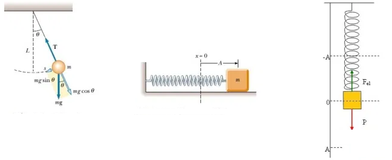
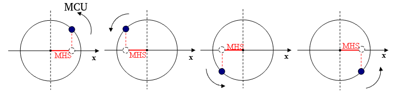
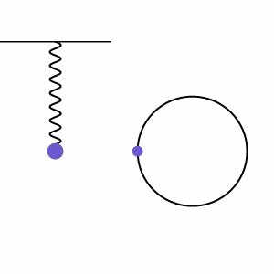
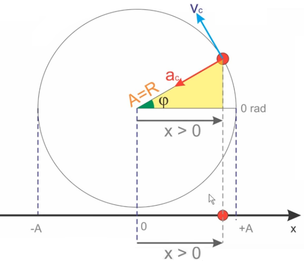
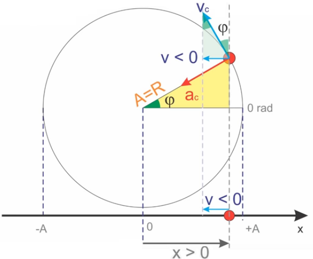
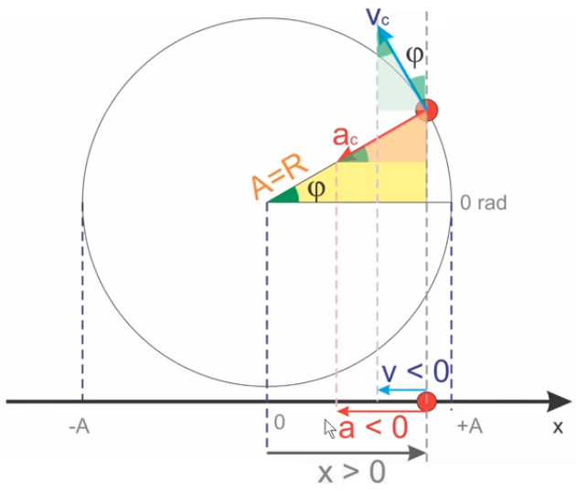
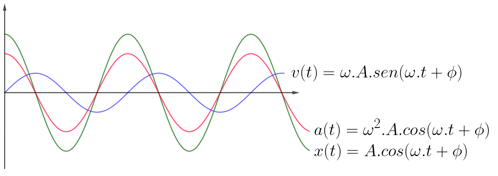

Aula1-10: Movimento harmônico simples (MHS)
Chamamos de movimento harmônico simples (MHS) o movimento oscilatório que se dá ao redor de uma posição de equilíbrio. As oscilações deste tipo de movimento se repetem periodicamente, isto é, em intervalos de tempo iguais. São exemplos de MHS pêndulos em oscilações de amplitude pequena e sistemas massa-mola, quando desprezamos as resistências envolvidas nos sistemas.

|
Um fato matemático notável: todo movimento harmônico simples pode ser descrito como a projeção, sobre um eixo, de um movimento circular uniforme:  Percebido isso, interessa-nos, aqui em cinemática, descrever a posição, a velocidade e a aceleração do MHS por meio de funções. |
 |
Função da posição
|
 |
Uma breve análise do triângulo destacado ao lado nos permite concluir que a posição da partícula é dada por:
Em que A — igual ao raio R — é a amplitude, isto é, a maior distância possível entre a partícula e o ponto de equilíbrio. Do estudo do movimento circular, sabemos que o ângulo
Substituindo essa expressão na equação anterior, obtemos:
|
Uma breve análise do triângulo destacado ao lado nos permite concluir que a posição da partícula é dada por:
Em que A — igual ao raio R — é a amplitude, isto é, a maior distância possível entre a partícula e o ponto de equilíbrio.
Do estudo do movimento circular, sabemos que o ângulo é dado pela expressão:
Substituindo essa expressão na equação anterior, obtemos:
Função da velocidade
|
 |
O triângulo destacado nos permite inferir que:
Em que Dos estudos de movimento circular, sabemos que a velocidade tangencial pode ser escrita em função da velocidade angular e do raio:
Substituindo esse valor na equação anterior, obtemos:
|
O triângulo destacado nos permite inferir que:
Em que é a
velocidade tangencial do movimento circular uniforme.
Dos estudos de movimento circular, sabemos que a velocidade tangencial pode ser escrita em função da velocidade angular e do raio:
Substituindo esse valor na equação anterior, obtemos:
Função da aceleração
|
 |
O triângulo destacado nos permite inferir que:
Em que Dos estudos de movimento circular, sabemos que a aceleração centrípeta pode ser escrita em função da velocidade angular e do raio:
Substituindo esse valor na equação anterior, obtemos:
|
Em que é a aceleração centrípeta do movimento circular uniforme.
Dos estudos de movimento circular, sabemos que a aceleração centrípeta pode ser escrita em função da velocidade angular e do raio:
Substituindo esse valor na equação anterior, obtemos:
Gráficos da posição, velocidade e aceleração em função do tempo

A força restauradora
De acordo com o que há pouco deduzimos:
e
;
ou seja:
Pela segunda lei de Newton, sabemos que . Substituindo essa expressão na equação anterior, obtemos:
,
em que
é
constante.
Concluímos, então, que os movimentos oscilatórios são aqueles em que a força restauradora é proporcional ao deslocamento e de sentido contrário a ele, podendo ser escrita, de forma genérica, como: